French Family Association
The Official Website of the Surname French
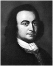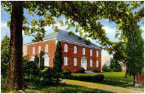
Pohick Church in Lorton, VA, and its members George Mason, George Washington, and Daniel French. The Church was built in 1770 by Daniel French, grandson of Hugh.
Chart #36, Hugh French Ist, 1636
St. Mary’s and Charles Co., MD
Westmoreland, Prince William,
Stratford, Fauquier, King George, Richmond, Culpeper, Northumberland, and
Loudoun Counties, VA
Also Mason Co., KY; Pike Co., MO; Independence Co., AR; and Zaneville, OH
This chart updated by Mara French on 7/25/08. Numbers in brackets [ ] refer to the bibliography at the end of this chart. An asterisk (*) shows continuation of that line. Send any corrections or additions to this chart to marafrench@mindspring.com. Revisions: 1991, 1997, 2008.
| Intro
| Gen 1
| Gen 2
| Gen 3
| Gen 4
| Gen 5
|
| Gen 6
| Gen 7
| Gen 8
| Gen 9
| Gen 10
|
| Gen 11
| Gen 12
| Records
| Bibliography
|
In Appreciation
The FFA would like especially to thank three people for making this chart successful:
Margaret Amundson, CGsm, for her extensive research of the French family of Maryland and Virginia. Margaret has given so much over the years (at least 20) and we are thankful for her endeavors. CGsm is a service mark of the Board for Certification of Genealogists, used under license by Board-certified associates after periodic proficiency evaluations. She is certified genealogist number 398. The Board for Certification is incorporated in WDC. It was founded in 1964. If you look closely at genealogical publications, you will find the initials F.A.S.G. after names, standing for recognition of excellence in the field. We all hope her book on this subject will be published soon. Her book contains overwhelmingly more information on Hugh French (30+ pages), plus details on other families and life in Virginia. Her line is Hugh French (1); Mason French (2); John French (3); Mason French (4); Margaret Burgess French (5); Albert Franklin Garrett (6); Corneila Alice Garrett (7); Margaret May Sparshott (8); Ruth Corneila King (8); Margaret Ruth Bates (9), m1. Carroll, m2. Amundson.
Donald Hayes was a Layout Inspector for Quality Control for 35 years. He has been a real asset in editing and researching this line. His line is Hugh (1), Mason (2), Hugh (3), Daniel (4), Hugh of Adair (5), dau. Teresa Whitlock (6), Delia Whitlock (7), Hugh Million (8), Charles Million (9), Ira Million (10), dau. Irene Hayes (11), Donald Hayes (12).
Bob Cawly is in the possession of much pertinent research on the relationship between the French, Mason, and Savage families, including land purchase records that show that Hugh French bought land adjacent to Capt. George Mason in September 1693. He also has interesting information and ship records with the names of Frenches and Masons arriving in the same year of 1663 and a Francis and John French who lived in Maryland and later possibly went to Virginia along with Hugh. Bob also did extensive research on the headrights, plus contributed almost all of the PDF files linked to this chart. He was an FBI Agent after the Marine Corp and is now an accountant.
PLEASE NOTE: This chart has proved to be very complicated, and with many records burned, it has been almost impossible to verify. The statements given in this chart are to the best of my ability. Please email me for comments at marafrench@mindspring.com. Someday if I have time and energy, I will add an index.
Contents
· Not from Frenchpark, Roscommon, Ireland
· Margaret Amundson’s Theory of Hugh French’s Origin
· Mara French’s Theory of Hugh French’s Origin
· Capt. Nicholas Marteaw and William French
· William Hatton and Hugh French
· Other Early Immigrants to Maryland with the Surname French
DNA Website for Group 1, FFA Chart 36, Hugh French and John Flanagan
Truro Parish Church (Pohick), Built by Daniel French, Fairfax Co., VA, 1768-74
Old Welbourne, Upperville, Virginia, Home of Elizabeth French Dulany
Generations 1 - 12 of this French Family
Chart #36 Records (Wills, Court Cases, etc.)
Chart #EE of Pershore, England
History and Research
The French, Mason, and Washington families were very close in their relationships because they were neighbors in England as well as Virginia. Hugh French settled in Maryland in 1663 [86].
See the History of Virginia, and Virtual Jamestown. It details essential background for anyone looking to understand the social, economic and political environments in Colonial Virginia. It is a great source to match key events and dates regarding ancestors of this line with what events were taking place at the time in Virginia. It also shows old maps and images.
Also, Albion’s Seed by David Hackett Fischer, 1989, lists the prominent men who immigrated to Virginia. Among those on the list of gentry or aristocratic families that relate to this family are Washington, Mason, Harrison, and Peyton. Among those not listed are all the other families in Chart #36, such as Prosser, Goffe, Miller, French, Baxter, etc., who were probably all indentured servants. Not of English origin were the Taliaferro family, of Florence, Italy. You will notice Peyton in this list -- Elizabeth Dade Peyton m. Daniel French, son of Hugh1 French. This tie lead the French family into dealings with George Washington. Hugh French and his descendants lived on Pope's Creek next to Wakefield on the Rappahannock River where George Washington was born in 1732. The Frenches gained wealth from land acquisitions and were not identified with the political scene as were Washington and Mason.
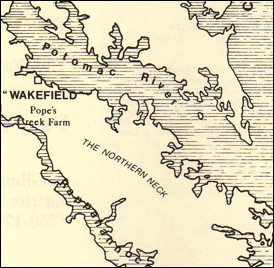
President George Washington
22 Feb 1732 – 14 Dec 1799
George Washington’s forefathers came from Sulgave Manor, near Banbury, in Oxfordshire, England near Northamptonshire, England [49]. John Washington, the first Washington to settle in the Virginia and Maryland area, arrived about 1657, shortly before Hugh French arrived in 1663. In 1731 George Washington’s father Augustine married Mary Ball of Epping Forest. He brought her to his home on Pope’s Creek where their son George Washington was born on 22 Feb 1732. Directly across Pope’s Creek in Virginia is Charles Co. Maryland where Hugh French owned land ca. 1680 which he gave to his son, Hugh, in his 1701 will. Hugh’s other son, Mason, lived at Machodock Plantation at Pope’s Creek in VA. Mason gave this land to his son, Hugh, who sold it to Daniel McCarty on 16 Mar 1743. George Washington lived at Pope’s Creek only until he was seven, in 1739, but the families remained in close contact, especially during the Revolutionary War, 1775-1783.
Sulgrave is 30 miles east of Stratford-on-Avon in England. There was a rather large French family living near Banbury in the town of Broughton, of whom John French M.D., 1616-1657, was born in Broughton, Northamptonshire, England, but no research has made a connection to FFA Chart #36.
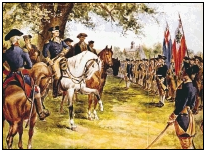
George Washington on Blueskin
George Washington wrote a letter to Elizabeth French Dulany thanking her for the horse, Blueskin, that her husband had given him during the Revolutionary War [53]. Elizabeth French was the great-granddaughter of Hugh French of the first generation of FFA Chart #36.
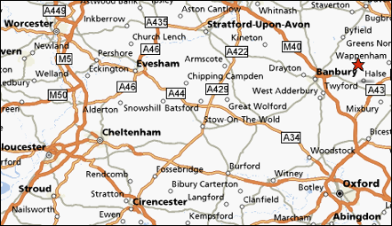
Just east of Worcester is Pershore where George Mason (below) lived. A very short distance east at the red star is Sulgrave where George Washington lived.
Many Frenches lived in Pershore. The Battle of Worcester took place in 1651 and caused these three families among a hundred others to flee to Virginia. In 1650 there were 8,000 inhabitants in Virginia. Thirty years later there were 40,000.
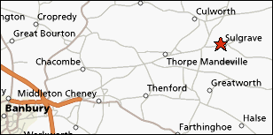
George Mason
11 Dec 1725 – 7 Oct 1792
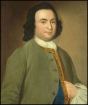
George Mason4 was the author of the Virginia Bill of Rights from which our Bill of Rights was patterned [21]. He lived at the Gunston Hall Plantation in Virginia, named after their home, Gunston Hall, in England.
George Mason’s family came from Pershore, Worcestershire, England. George Mason1, was born in 1629 to Thomas and Ann (French) Mason in Pershore. George Mason1 (1629-1686) m. Mary French. Therefore, George Mason1’s mother and wife were both a French. The closeness of this branch of the Mason family to the Frenches is also attested to by Thomas Mason’s calling on Grace (Baugh) French and Chrisagone (French) Hungerford to be witnesses to his will. In 1657/58 Ann (French) Mason witnessed the will of Grace (Baugh) French. The French and Baugh families were two of the most important families in the village of Pershore at this time. Their ownership of lands and houses placed them on the commissions of peace, on the vestry of the parish, and, in the case of George French, Gentleman, at the head of the court Baron of the Manors of Old and New Pershore. These families were Catholic [50]. See FFA Chart #EE.
George and Grace (Baugh) French of Pershore had two children born in England: George French in 1641 and Mary French shortly thereafter. Mary m. George Mason1, and immigrated to Virginia from Pershore, Worcestershire, England, where they had son George Mason2, b. 1660. The French family who were related to George Mason line were Ann, Charles, Dennis, Edward, George who d. 1647, another George who d. 1658, Mary who d. ca. 1660, Mary Virginia who was b. 1811 and d. 16 Nov 1851, and William. See the Gunston Hall website. The French and Mason families named at least one child after the other’s family; in other words, there is a French Mason and a Mason French. Mason French is a name that appears in almost every generation of FFA Chart #36. Likewise, the name Hugh French appears in almost every generation of FFA Chart #36.
Elizabeth French of FFA Chart #36 was b. in 1757 at Rose Hill in Fairfax Co., VA. Her father, Daniel French who built the Pohick Church in Fairfax County, the same church that George Washington and George Mason4 attended, died in 1771 when Elizabeth was only 14. She became the orphaned ward of George Mason4, who introduced her to Benjamin Tasker Dulany and they were married two years later on 10 Feb 1773 when Elizabeth was only 16. Elizabeth’s great wealth enabled the Dulanys to provide their eleven surviving children with estates in Virginia.
George Mason4, Bill of Rights, 1725-1792
see http://www.questia.com/library/book/the-life-of-george-mason-1725-1792-by-kate-mason-rowland.jsp
French and Mason Ties
The George Mason Family, Six Generations
A website on geocities shows the ancestry of the 5 George Masons [75]. Also see the George Mason Chronology.
· Thomas Mason, b. 1602 in Pershore, Worcestershire, England, father of George Mason1 who m. Ann French on 2 Feb 1624 in Pershore, immigrated to VA in 1652, d. Jul 1655. The closeness of this branch of the Mason family to the Frenches is attested to by Thomas Mason’s calling on Grace (Baugh) French and Chrisagone (French) Hungerford to be witnesses to his will. In 1657/58 Ann (French) Mason witnessed the will of Grace (Baugh) French. Both of these families lived in Pershore, England and immigrated to Virginia, but how they relate to Hugh French, we do not know. Ann was b. 1610 in Pershore. Ann French’s parents were George French and Cecily Gray who were m. ca. 1609 in Bromland, Somersetshire, England, and their children were Edward, Henry, Chrisagone, George, Ann, and Mary. The parents of George French were Edward French and Susan Savage. Edward’s father was William French, and his father was Robert French [129].
· George Mason1, b. 5 Jun 1629 in Pershore, Worcester Co., England [128], christened in Pershore on 10 Jun 1629, d. 1686 at 57 years old, his body was interred 1686 in Accokeek, Stafford Co., VA [128], m1. Mary French (how did she relate to Hugh? Was she his sister or cousin? Was George Mason1 the cousin of Lemuel Mason) in 1658, Mary d. after 1658 in Culpeper Co., VA. Then George Mason1 m2. Frances Norgrave in Stafford Co., VA [128]. George Mason1’s brother was William Mason, b. 1632 in Pershore, d. 1702 Mason Neck Plantation, Weeksville, Pasquotank, NC, m. Mary Whitfield. Their only known of child was Ralph Mason. Mary French was b. ca. 1630 in Pershore. She and George Mason1 had 6 children: Isaac, George, William, Edward, Sarah E., and Richard.
· George Mason2, b. 1660 I Accokeek, Stafford Co., VA, m1. Mary Folke, m2. Elizabeth Waugh, m3. Sarah French [123]. Ref. [125] says he m3. Sarah Taliaferro. George named one son French Mason, and that son named his son, French Mason Jr. See Mary Folke’s ancestral home in England.
· George Mason3, b. 1690, m. Ann Thomson, d. 1735 in boating accident
· George Mason4, b. 1725, d. 1792, m. Ann Eilbeck, (Bill of Rights writer and close friend of Daniel French and executor of his will, guardian of his daughter Elizabeth French). George Mason owned Gunston Hall, a 5,500 acre plantation.
· George Mason5, b. 1753, d. 1796, m. Mary Ann Barnes Hooe
· George Mason6, b. 1786, d. 1834
When you look at these two families, you can see they have been connected for 5+ generations. Hugh French probably fits in there someplace, but we don’t know yet how. Also, almost everyone of the 12 generation of FFA Chart #36 has a Mason French and a Hugh French.
George4 Mason and French Relationships
Land records in Richmond County show:
· Captain George Mason owned land adjoining Hugh French and his wife Margaret in 1693. See map.
· Ann French was the wife of Colonel George1 Mason.
· The citation in the 1771 will of Daniel French of Fairfax mentions his friendship with Col George Mason4 and signer of the Declaration of Independence.
· George Mason4 became the guardian for Daniel French’s daughter, Elizabeth.
From the Virginia Colonial Abstracts, more evidence shows:
· George Mason and Anthony Prosser on a land deed in Sep 1693.
· Hugh French and Anthony Prosser on a land deed in Sep 1693.
· Hugh French immigrated in 1663, the same year as Robert Mason, Margaret Mason, and John Mason.
· Early planters in Virginia in 1663 list Ann Mason, Robert Mason, and Susan Mason.
No proven source has been identified to connect Hugh French with the Mason family in England pre-1663. This could explain why these families were so interconnected with each other in Virginia and all became very prosperous.
Hugh French’s Origin
Not from Frenchpark, Roscommon, Ireland
Ref. [34], a descendant of Ellizabeth French and Benjamin Tasker Dulany who are mentioned above, as well as many online resources say that Hugh’s father was Daniel French of Frenchpark, Roscommon County, Ireland, and that this information has been handed down through his family for many years. Ref. [34] also indicated that Daniel’s three children were Hugh, Daniel, and Sarah who m. Colonel George Mason. According to Ref. [50], George Mason2 m. a Sarah Taliaferro, and George Mason4 m. Sarah Brant. It could be that these Sarahs had other marriages, so French is not ruled out. Ref. [34] further says that Daniel came to Old Point Comfort VA in 1660 and died in Richmond Co. VA in 1695. No verification has been found for this.
As far as this line coming from Roscommon Co., Ireland and according to email Mara French received from the wife of the 7th Baron de Freyne of Frenchpark, Roscommon, Ireland, in April 2008, there were no men named Daniel in her family, nor did any French from her family immigrate to America. They immigrated only to Canada and England at later time periods. We are still unsure why Hugh French1 named one of his sons, Daniel. This information does not preclude Galway Frenches (nearby Frenchpark) who definitely came to America. See Chart #IREF. See the George Mason IV Family. Also see FFA Chart #137, James French, who immigrated to Maryland about the same time as Hugh did, but James was from Ireland. These 2 branches of the French family are two separate families per DNA testing. Chart #36 is from DNA Group 1, and Chart #137 is from DNA Group 7.
From Mara French: Hugh named one of his sons, Daniel, which in unexplainable at this time; however, the name Daniel is an Irish name.
Theory vs. Hypothesis
Theory is used to explain something based on principles. Hypothesis is a proposed explanation made on the basis of limited evidence as a starting point for further evidence. That indicates what I intend. In my lifetime, the evidence may never be found, but at least these theories are on the internet for someone to research themselves. I've grown to be more comfortable with the word “theory” than “hypothesis”. I believe “theory” is a better word than speculation, assumption, or supposition. In any case, these theories support limited proof or no firm evidence. I feel the evidence may not shine through until I'm long gone, but it's better to have a theory out there and say there is no proof than to keep it in my file drawer. - Mara
Margaret Amundson’s Theory of Hugh French’s Origin
I have been working on a book for a number of years on this family. I have gone into this in great detail. Hugh1's biography is over 30 pages long as I have transcribed a number of documents on him. - Margaret
WHERE DID HUGH COME FROM?
In the past, several different family historians have offered theories explaining where they thought Hugh was from in Europe. One such theory was advanced by the Reverend French Forrest, a descendant of Hugh's in answer to a Richmond Times Dispatch weekly genealogy column, popular at the turn of the last century. He said in the article the Frenches were from Roscommon County, Ireland. Rudimentary attempts have been made to prove or disprove this theory, without results.
Others have advanced the theory that he was related somehow to the George Mason family and point to the use of Mason as a given name, in the French family and French in the Mason family, as evidence of this relationship. Certainly the George Mason of Gunston Hall Family, clearly had a reason for using French as a given name. George1 Mason's mother was Ann French. His first wife is said to have been Mary French. There is evidence she was named Mary, however, nowhere is there a record that identifies her as nee French. This theory was probably advanced long before the authors of The Five George Masons, discovered the record in England showing Ann French married George1 Mason's father. Thomas Mason, his father, was a yeoman farmer in the village of Pershore, in the Vale of Eveshame, Worcestershire, England. No creditable evidence establishing a kinship tie between these two families has been found.
There was not the web of interconnecting relationships typical of community structure between this Mason and French family. The Mason’s were part of the elite. They were vestry, served on the court and served in the legislature. Hugh served in a minor office the first year he was married to Margaret and none after that. It was the third generation before the names were linked in any way. There were several other Mason families and at least one other George Mason, living in Stafford County, Virginia during the mid to late seventeenth century. It is doubtful Charles Baldridge would have accepted George Mason or George Brent as arbitrator in his dispute with Hugh, if either of them were closely related to Hugh.
Now that it is known Margaret was not the daughter of Daniel Gaines, she could be the reason for naming a son Mason. Any attempts to find a Mason connection should focus on Margaret as well as Hugh for the explanation. One should keep in mind Margaret named her first son Anthony. Her husband John Prosser was married before and one of his older sons may have been named for his father. Assuming Margaret followed the custom of others of the time, and named a second son after the wife's father, her father's given name could be Anthony. Future researchers should be cognizant of this possibility.
Immediately upon Hugh's arrival in Virginia, he was met with lawsuits relating to the settlement of the estate of Simon Miller. As long as Margaret remained a widow, she could enter and defend suit on her late husband’s behalf, but once she married, her husband had to do so for her.
At the 7 April 1686 session of the north side court, Hugh was appointed by his Mattes Justices of peace as a surveyor of the highways in place of James Taylor for the next year. Hugh was given this office a year after his arrival in Virginia. According to a chart prepared by the Rutman's this would be a second tier office in colonial Virginia society. Hugh never served in a higher office such as vestryman or justice. He served on juries in both Maryland and Virginia. He also inventoried estates. Perhaps he never aspired to any higher office or was not well connected. He seems to have devoted most of his time pursuing ventures that would increase his wealth rather than civic affairs.
Margaret Amundson
PDF report showing sources
Mara French’s Theory of Hugh French’s Origin
Thomas Mason’s son, George Mason1, who m. Mary French, are all tied into the same group of people who immigrated to Maryland and Virginia ca. 1663. All were Catholics and Loyalists to King Charles I, and all lived in the same area in England, Pershore. George Mason1 is a contemporary to Hugh French1; both born between 1629-1639. George Mason1 had no choice but to leave England. After the deposition of King Charles I (19 Nov 1600 – 30 Jan 1649) who had his head cut off in 1649, the Frenches and Masons, who had been loyal to him during the Battle of Worcester on 3 Sep 1651, and who were Catholics, needed to flee for survival, or join the Royalists. Pershore is very near Worcester. The Battle of Worcester was the final battle of the English Civil War.
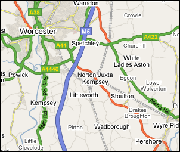
Map of the Nearby Towns of Worcester and Pershore in England
The Masons and the Frenches immigrated to Maryland and Virginia, two states that were loyal to King Charles I. These men, who had established a New Model Army, fled first to London after the deposition of King Charles I in 1649. The invaders, the Royalists, were Presbyterians. The Parliament Loyalists were Catholics who immigrated to Virginia. In 1660, King Charles II created a lot of immigration to Virginia and Maryland as he rewarded those loyal to the crown with land and titles. A New Colony was formed by King William III and Queen Mary II and included The College of William and Mary in Williamsburg, VA, the first college in America, founded in 1693.
Headrights
By Bob Cawly [86]
Hugh was a surveyor and thought of in high regard. William Hatton was a Headright who transported Hugh French. Just because someone received a headright for service did not necessarily mean that they were indentured. Anyone who made their way to the Colonies qualified for a headright grant. These headrights were sold a commodities and the person registering the headright was not any indication that they sponsored the person’s arrival. All patents in Maryland came from the Lords Baltimore. The Charter of Maryland granted to Cecilus Calvert on June 20, 1632, gave the authority to "assign, alien, grante, demise, or enfeoff" land. The system was similar to that of Virginia. Headright grants similar to the Virginia system were made from 1634-1680. Headrights were often accumulated over a period of years by an individual seeking a particularly large piece of land. After 1680 all grants were fee-simple. Warrants, surveys, and patents exist in the Maryland Archives, as does an “Index to Patents”. This is why Hugh exercised his headright in 1680.
Hugh’s Headright expired in 17 years, or 1680, and before its expiration, he sold his Headright to William Hatton, allowing him to claim 50 acres for 5 shillings.
Hugh French could not have been an indentured servant and risen to the heights that he did without having a family tie (through marriage) to these famous men (Mason and Washington) [87]. Read more about “Acquiring Virginia Land by Headright”. The right to receive fifty acres per person, or per head, was called a headright, for every individual brought to Virginia. The economy had an excess of land and a shortage of people, so it introduced immigration through promises of cheap land. The headright system encouraged wealthy individuals, such as William Hatton, to pay to transport indentured servants to Virginia. At the end of their term of indenture, they were given some basic clothing and equipment, and expected to move to the unsettled frontier where they could purchase unimproved land there. They cut down trees and grew crops such as tobacco. Indentured servants were transformed into landowners. The former servants may have been cash poor, but they could usually buy land on credit. The gentry were the wealthy top 5% at the top of Virginia’s stratified society. Most were “Cavaliers” who had moved to Virginia during the English Civil War mentioned above. See Research on Headrights in Colonial America. See also Jim Petty’s research on headrights [131].
Drawing of Oliver Cromwell in the Battle of Worcester, 3 Sep 1651
The saga of Captain Truman and the joint Marylander and Virginian militia operation which clearly place Hugh French, Colonel John Washington, and Colonel George Mason as contemporaries that knew each other. They all left shortly after the battle, first to London, and then to Virginia, as did many others up until the Restoration of Charles II. Many of the people that came to Virginia were Loyalists and were granted land by Charles II in Virginia and Maryland. In 1660, Parliament offered to restore the monarchy if Charles would agree to concessions for religious toleration and a general amnesty. Thus, the influx shortly after 1660 – Hugh French was in this group [87].
Capt. Nicholas Marteaw and William French
Ref [39] lists early Virginia immigrants of which William French, accompanied in 1654 (right after the Battle of Worcester in 1651) by Capt. Nicholas Marteaw (Anglicised “Martian”), across the ocean to Westmoreland Co. VA. Captain Nich. Marteaw had already lived in Elizabeth Cittie, Virginia, as early as 16 Feb 1623/4 [38]. His first sailing to Virginia was on 11 May 1620 [102]. Before that, on 11 May 1615, he appeared as a witness for the French Huguenot Congregation on Threadneedle Street, London, England [41]. Nicholas Marteaw (Martian / Martin) is not listed in Ref [43] as William Hatton and Hugh French are, below. Nicholas Marteau (as it is spelled in some sources – he was born in France and immigrated to England), m. Jane Berkeley and had dau. Elizabeth Marteau, b. ca. 1625 who m. Col. George Reade. Jane had m1. Lt. Edward Berkeley, m2. Nicholas Marteau ca. 1624. According to the Martiau Ancestry of the Lewis Family, Nicholas Martiau was b. 1591 in France, was a French Huguenot, and thereafter became a British citizen [102]. Martiau acquired a large tract of land that included the present city of Yorktown, VA. He was also the earliest Virginia ancestor of George Washington, being his great-great-great-grandson [102]. Nicholas was a French Huguenot in the French church on Threadneedle St., London, and was in the service of Henry Hastings, Earl of Huntingdon [102].
Threadneedle
St. is a French (the country) church founded in 1550 with a Huguenot
congregation, in central London. See map.
Website: http://www.motco.com/map/81002/SeriesSearchPlatesFulla.asp?mode=query&title=Thread+Needle+Street&artist=384&other=320&x=11&y=11
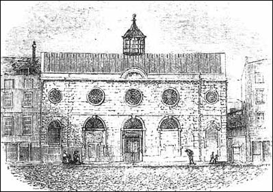
A drawing of the Huguenot Church on Threadneedle St. as it
looked in the 17th Century. Today it is replaced by the Royal
Exchange. Website:
http://www.art-science.com/Ken/Genealogy/PD/images/Church.jpg
{kind=link}
William Hatton and Hugh French
Hugh French was transported to Maryland by William Hatton in 1663, 9 years later than William French and Capt. Nicholas Marteaw (see above), also of London. William Hatton, a new Virginian settler, paid his own passage to Virginia and was granted one headright, Hugh French, who pledged to perform 5-7 years of labor for William Hatton.
William Hatton was b. between 1636-1642 in London, England, d. 2 Aug 1712 in Prince George Co., MD, the son of Richard Hatton and Margaret Banks, and he m. Elizabeth Wilkinson. Richard Hatton was b. ca. 1619 in London, Middlesex, England, and d. 1649 in St. Mary’s Co., MD, and his parents were also born in London, which might indicate that Hugh French immigrated from London since he was transported to Maryland by William Hatton. Hugh French may have also lived in the London surroundings, or even a bit more north where George Mason lived. Hugh French was a contemporary to William Hatton, born probably 1638. Hugh was a single man when he arrived in Virginia in 1663, then married the first time about 1678. In the same year as Hugh French arrived on 28 Jul 1663, William Hatton claimed 50 acres of land in Charles Co., MD., for transporting Hugh, which was given to Hugh after his service in 1680 [21]. Hugh later gave this land to his son, Hugh, in his 1701 will [21].
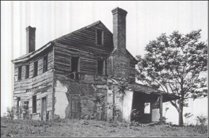
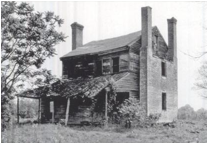 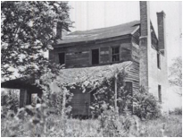
Hatton Mansion
William Hatton owned Hatton Mansion (photos shown above) [104]. Hatton Mansion, formerly known as Batchelour’s Harbour, was originally part of an 800-acre tract owned by Jeremiah Dickeson and Stephen Montague. In 1667 Dickinson sold his interest to Montague for 3,300 pounds of tobacco. In 1670 Montague sold Batchelour’s Harbour to Hugh French for 10,000 pounds of tobacco. In 1663, Hugh French renamed his tract Hatton Point for William Hatton, who transported him to Maryland that same year. By 1936 it was too late for preservationists to save this home due to decay and neglect. Hatton Mansion was the main house on an 800-acre tract of prime land near Warburton Manor. It was originally patented by William Hatton and remained in the Hatton family until a fire in 1857. Old Hatton Mansion was a two-story Georgian building with two chimneys. The double-chimney house was larger and more comfortable for its 18th-century inhabitants than the center-chimney type. The house was built during the 18th and early 19th centuries. The original Hatton Mansion was owned by many prominent families through a succession of marriages [106]. William Hatton was of London, a clerk and bookkeeper, age 21 [105].
Other Early Immigrants to Maryland with the Surname French
Hugh French’s contemporaries, James French (transported I 1671), Nathaniel French (transported in 1659), and Patrick French of Maryland, are part of an entirely different French family. They were from Ireland. DNA tests have proven this separate lineage [43]. See James French, FFA Chart #137.
St. Leonard Shoreditch
The parish of Shoreditch within London, England, is a possibility for Hugh’s homestead, where “a” Hugh French b. ca. 1560 resided with his children Thomas, William, Anne, and Judith.
St. Leonard Shoreditch Vital Records, 1558-1640, London Guildhall Library. Approximately 11,000 baptisms, 4500 marriages, and 17,000 burials. St. Leonard’s, Shoreditch is a church of England denomination in the London borough of Hackney, located along Shoreditch High Road. First photo below is an 18th century print. The Shoreditch Parish covered a large area. If anyone can locate a French on this 1745 map, please email marafrench@mindspring.com.
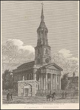 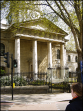
Baptisms:
http://socrates.berkeley.edu/~ahnelson/PARISH/baptisms.html
Anne French, dau. of Hugh French, 8 Mar 1589
Charity French, dau. Robert and Margaret French, 18 Oct 1637
Judith French, dau. Hugh French, 19 Oct 1595
Nicholas French, son of Thomas French, 2 Jun 1566
Thomas French, son of Hugh French, 10 Mar 1582
*William French, son of Hugh French, 23 Oct 1586
Burials:
http://socrates.berkeley.edu/~ahnelson/PARISH/burialsA_M.html
Elizabeth French, servant of Roger Moris, 6 Sep 1603
Margery French, from Foster (residence?), 9 Sep 1582
Mary French, dau. of James French and Margaret, 9 Jan 1627
Nicholas French, son of Thomas French, 7 Jun 1566
Thomas French, son of Hugh French, 6 Apr 1589
Marriages:
http://socrates.berkeley.edu/~ahnelson/PARISH/brides.html
Thomas French, m. Alice Russell, 25 Nov 1564
Synopsis of Above:
Starting with the earliest date above, 1564, one might conclude:
1. Thomas French, b. ca. 1540, m. Alice Russell on 25 Nov
1564
2. Nicholas French, son of Thomas, born 2 Jun 1566, buried. 7 Jun 1566 (5 days)
1. Hugh French, b. ca. 1560, perhaps brother of Thomas above
2. Thomas French, son of Hugh, b. 10 Mar 1582, d. 6 Apr 1589 (7 years)
2. William French, son of Hugh, b. 23 Oct 1586*
2. Anne French, dau. of Hugh, b. 8 Mar 1589
2. Judith French, dau. of Hugh, b. 19 Oct 1595
*Only male of this line to carry on the name. His grandson could have been Hugh French, b. ca. 1638, of Chart #36.
You will also notice that there are many ancestors from the Mason family listed, and only one from the Washington family, John Washington who m. Mary Curtis in 1621.
"SHOREDITCH, a parish and populous metropolitan district, in the Tower division of Ossulstone hundred and parliamentary borough of the Tower Hamlets, county Middlesex, 1½ mile N.E. of St. Paul's cathedral. It is the terminus of the Great Eastern railway, which terminus is soon to be moved to Liverpool-street, City. The Metropolitan railway has a station opposite the parish church. This parish, which is extensive, lies for the most part between the Regent's canal, Hackney-road, Finsbury Circus, and the City-road. It comprises Hoxton Old and New Town, Holywell, Moorfields, Church-End, and Haggerston, covering 620 acres, and containing a population in 1861 of 129,364. See Map of Shoreditch. St. Leonard’s church was founded about the 12th century. See East of London Surname Search Results for French.
Hugh was transported to Maryland by William Hatton, who entered his claim 30 Apr 1663 [43]. William Hatton, the son of Richard and Margaret Hatton, of England, was burgess for St. Mary’s County, Virginia, from 1671 to 1675 [47]. He was b. ca. 1627 in London, England, and d. 2 Aug 1712 in St. George’s Co., MD [48]. William Hatton’s lineage is John Hatton (1) of Gloucestershire; Richard Hatton (2), b. 18 Sep 1580 in London, England, m. Margaret Boys, d. 1 Jun 1630 in London, England; William Hatton (3), b. ca. 1627 in London, England, m1. Mary, m2. Elizabeth Wilkinson, d. 2 Aug 1712 in St. George’s Co., MD [48]. Because Hugh had a high standard of living with the Mason, Washington, and Hatton families, he may not have been an indentured servant, since William Hatton was a speculator in headrights [86].
Considering the fact that both Capt. Nicholas Marteaw and William Hatton were from London and were both about the same age as Hugh French, there is a good possibility that Hugh French was also from London, England. Also one might consider the fact that there was “a” Hugh French family born in Shoreditch Parish, London, England, as shown above.
Masons baptised at Shoreditch Church in London, website:
http://socrates.berkeley.edu/~ahnelson/PARISH/baptisms.html
|
Anne |
Mason |
d Richard Mason |
|
7 MAR 1611 |
|
Anne |
Mason |
d Thomas Mason |
Elizabeth |
16 JUL 1629 |
|
Anthony |
Mason |
s George Mason |
Christian |
11 MAY 1623 |
|
Charles |
Mason |
s Richard Mason |
|
30 JAN 1613 |
|
Charles |
Mason |
s Charles Mason |
Phillis |
13 OCT 1622 |
|
Dorithie |
Mason |
d Richard Mason |
|
27 MAR 1603 |
|
Elizabeth |
Mason |
d Mason |
Anne/W |
29 MAR 1619 |
|
Elizabeth |
Mason |
d Thomas Mason |
Sara |
24 APR 1625 |
|
Elizabeth |
Mason |
d Clever Mason |
Elizabeth |
4 NOV 1638 |
|
Joane |
Mason |
d Charles Mason |
|
3 SEP 1615 |
|
John |
Mason |
s Charles Mason |
Phillis |
16 SEP 1621 |
|
John |
Mason |
bs Mason |
Susan |
27 FEB 1638 |
|
Martha |
Mason |
d Charles Mason |
Phillis |
10 OCT 1619 |
|
Mary |
Mason |
d Richard Mason |
|
24 APR 1608 |
|
Mawdlin |
Mason |
d Charles Mason |
|
4 OCT 1612 |
|
Mawdlin |
Mason |
d Charles Mason |
|
10 OCT 1613 |
|
Michael |
Mason |
s Mathias Mason |
Parnell |
7 OCT 1632 |
|
Oliver |
Mason |
s Richard Mason |
|
28 APR 1605 |
|
Oliver |
Mason |
s Richard Mason |
|
10 JUN 1606 |
|
Oliver |
Mason |
s John Mason |
|
24 MAY 1607 |
|
Susan |
Mason |
d Charles Mason |
|
16 NOV 1617 |
|
Thomas |
Mason |
s Randolph Mason |
|
14 DEC 1583 |
|
Thomas |
Mason |
s Richard Mason |
|
3 DEC 1598 |
|
Thomas |
Mason |
s Thomas Mason |
Elizabeth |
31 OCT 1630 |
|
William |
Mason |
s Oliver Mason |
Elizabeth |
21 JUL 1636 |
|
Anne |
Masone |
d Oliver Masone |
Elizabeth |
9 AUG 1640 |
Hugh French’s Life in America
Immigration to America
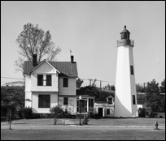 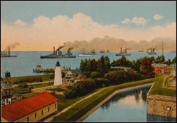
Old Poynt Comfort Lighthouse and Keeper’s House, located on the grounds of Fort Monroe in Virginia, the oldest lighthouse still in use. The lighthouse was established in 1774.
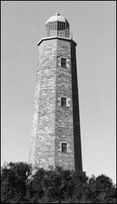 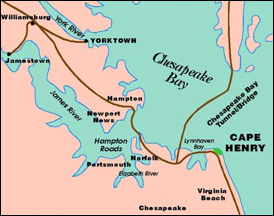
Cape Henry Lighthouse, shown at the end of the James River in Virginia Beach. Old Poynt Comfort is in Newport News.
In March 1634 several immigrants arrived on the Ark and on the Dove up the Potomac to St. Mary’s River in Maryland. Aboard the ships were the first colonists to arrive in Maryland under the royal charter of Lord Baltimore. Also see the USGenNet Legacy Website. According to the List of Immigrants, the names French, Mason, and Washington do not appear. See also the Founding of Maryland. See copyrighted photo of the Arc and Dove by John Moll.
Old Poynt Comfort and Cape Henry were two landing points along the James River in Virginia to where immigrants came in the early 1600s. Ref [39] lists early Virginia immigrant William French, 1654 by Capt. Nicholas Marteaw (Anglicised “Martian”), Westmoreland Co. See the William and Mary Quarterly, Vol. 10, No. 3 (Jan 1902), pp. 167-175. These 9 pages were published by the Omohundro Institute of Early American History and Culture. You may need to pay to read these pages as I did, but here is the main jest of it below. Also see Ref [76] for a possible lead to William French.
From Colonial Yorktown by Clyde F. Trudell, Chatham Press, pages 37-43
“When a Frenchman changes his nationality, that's news, and it was certainly good news to the Colony when the French military engineer, Captain Nicolas Martiau, after becoming naturalized by special proclamation of King James I, came out in 1620 to build forts in Virginia. A list of the "Living and Dead in Virginia" dated February 16, 1623, list "Cap. Nich Marteaw" as being among the living at "Elizbeth Cittie." Like so many seventeenth century names, Martiau was subject to a variety of spellings. His patent of 1630 refers to him as "Martian" and another record alludes to him as Marcian. But because he signed himself as "Martiau" and was so addressed in his correspondence from his patron, the Earl of Huntington, we shall confine ourselves to that spelling. "Captain Nick" was unrivalled in energy and application, and his feats of military prowess led him through operations of defense, offense and romance”.
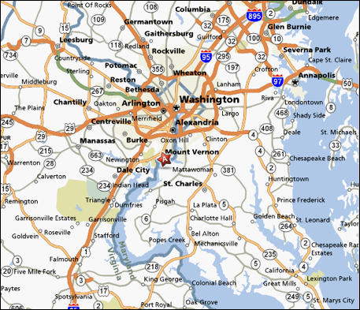
Religion and Locations
The map above at the star shows Mount Vernon where President Washington resided along the Potomac River. Going down the Potomac at the bend is Pope’s Creek where Washington was born in Maryland, and precisely across from Pope’s Creek in Virginia is where Hugh French resided.
Since Hugh French owned land on both sides of the Potomac River (Charles County, Maryland and St. Mary’s County, Virginia – he did not own land in VA until the 1680s), he may have lived in only one of the states. St. Mary was a Catholic county and Westmoreland was an Episcopalian county (or the Church of England). Hugh may have followed the Mason family to Virginia. Margaret Amundson told me that they might have resided in one location and went by boat to the other location to go to church. Hugh French also had land along Piscataway Creek in Maryland that he received from Stephen Montague. Colonel George Mason, Geo Mason, and an Ann Mason all paid rent on land in the Chicamuxen area of MD (a wildlife area in Charles Co., MD). The Chicamuxen Creek is due south of Mattawoman Creek and directly across the Potomac River from Quantico, Stafford Co., VA. The Potomac River is in the state of Maryland. See Chicamuxon Rent Rolls.
Hugh made his will in Richmond Co., VA, and died in Stafford, VA in 1701. Essex County is across the Rappahannock River from Richmond. These two counties were formed from what is now called Old Rappahannock County that was the parent county of both. Old Rappahannock ceased to exist in 1692 and these two counties were formed from then on the Rappahannock River side of what is known as The Northern Neck of Virginia. Most of the French records before branches of the family migrated elsewhere were located in the records of Westmoreland or Stafford, King George, Fairfax, Prince William, Fauquier and Loudoun counties [21].
Ownership of land was tied to the Church of England in VA. At one point, Quakers were hung and Maryland took them in ca. 1670-80. Maryland was founded on religious tolerance. Both Catholics and Church of England were on the “Ark and Dove”, but the happenings in England caused problems in MD and VA, hence the Act of Toleration in MD was repealed. St. Mary’s Co. was a haven for Catholics and still is today [21]. Who settled or lived in which county was more a function of the political climate in England rather than pure religion.
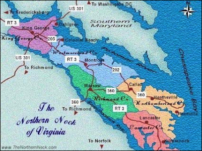
Counties in Virginia
Northumberland County was the first county formed in the Northern Neck, on the Potomac River, about 1642. Out of this, Westmoreland County was formed in 1652, comprising the western frontier. In 1675 the western part of Westmoreland was formed into Stafford County. In 1720 King George was formed from Richmond County, and in about 1740 a strip of Westmoreland was added to it [45]. Old Rappahannock County existed between 1656 and 1692, and then became Essex and Richmond Counties.
DNA Website for Group 1, FFA Chart #36
See DNA Test, Group 1 under Hugh French. DNA = Deoxyribonucleic acid. This family’s test matches at least one of the male testers of the following charts, indicating that perhaps all these charts are connected perhaps back in England: Chart #188, Chart #21, Chart #22, Chart #184, Chart #187, Chart #189, Chart #36, Chart #190, Chart #28. Most of these families immigrated to New Jersey.
The earliest date of these charts is this one, FFA Chart #36, which might indicate that the earliest ancestors of the other charts first immigrated to Maryland or Virginia, and then migrated north to New Jersey. Most of the ancestors of DNA Group 1 are from New Jersey. The DNA connection could tie back to England. The FFA cannot find connections between these charts, that is the reason they are separate charts. At least one person from each chart listed above took a DNA test and they matched. No one has a clue yet as to how these lines are connected – it might even be back to England or further back than that.
Flanagan and French DNA Tests: Email from Ref [25]. Hi Mara, yes, though it was my cousin Mike's DNA test. We actually tested two branches of the John Flanagan and Ruth Triplett though one at only 12 markers. Both of those matched the French family to our surprise. I have not found any documentation but surmise that John Flanagan was a close relative of Mildred French on the French side of her family (i.e., Mildred’s brother’s son). After Mildred French m. Bryant Flanagan on 7 Dec 1813 in Wayne Co., KY (Generation 6), they most likely adopted John, at which time he received the surname Flanagan. This might have been due to the death of John’s bloodline French parents. Since John Flanagan was b. ca. 1815 in Adair Co., KY, he would have been the son of one of Mildred’s brothers: Mason, or Hugh, or Daniel. These 3 brothers are older than Mildred, and John Flanagan was her oldest child. I would certainly appreciate the link when it is finished, as this line is my line as well through Mildred. Grace O'F.
Contents
Chart #36 Records (Wills, Court Cases, etc.)